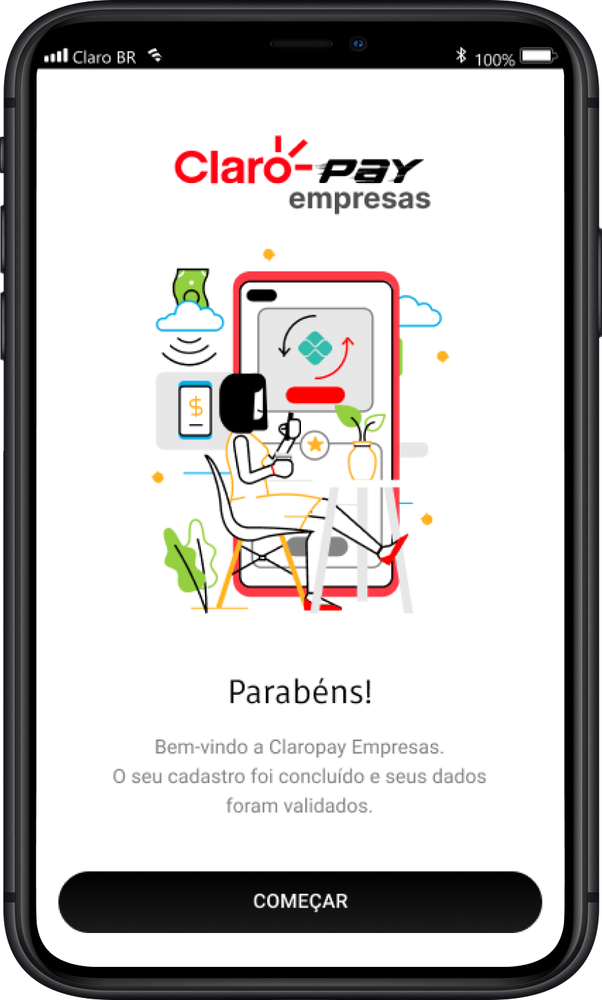
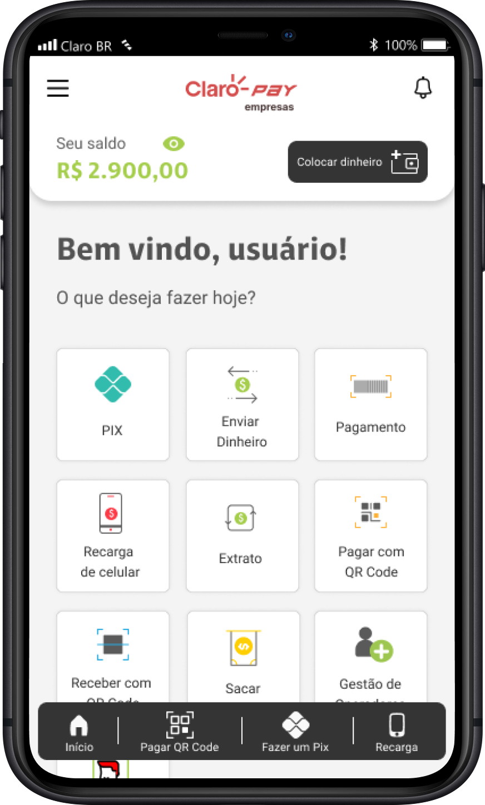
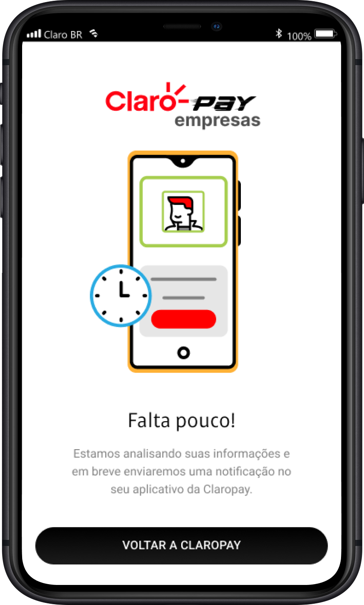
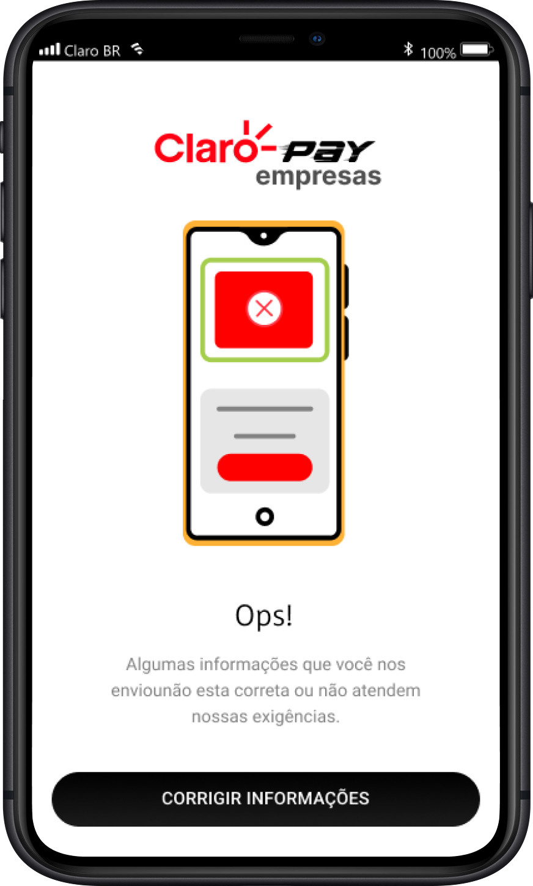
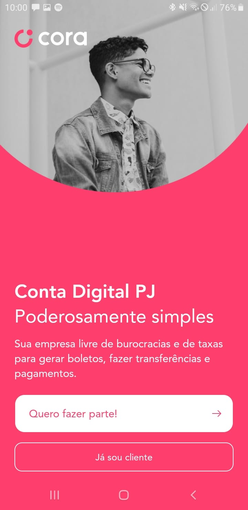
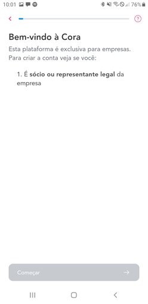
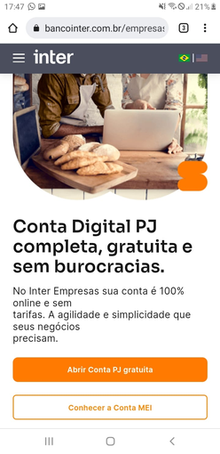
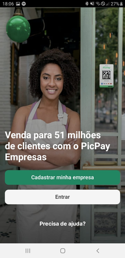
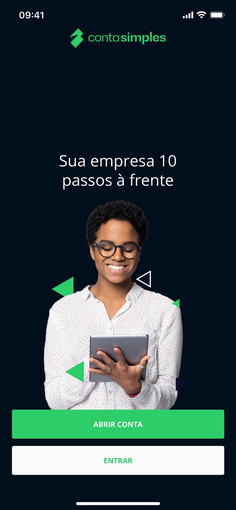

Improving the user experience through a new onboarding flow
A registration flow that needed to be reliable for companies just getting started on the platform. The work ranged from mapping exception scenarios to creating the design system that would support the product.
Intro
Context
Claro Pay Empresas is Claro's corporate payments solution. The product needed a more intuitive, professional onboarding experience for companies just starting out on the platform.
The challenge
The registration flow couldn't keep up with real-world usage. Simple scenarios like an invalid company tax ID, a non-existent zip code, or a valid tax ID not accepted for certain business types had no clear handling.
Users made mistakes, got stuck, and abandoned the process without understanding what had gone wrong.
What I did
I redesigned the main onboarding flow, mapped more than 15 exception scenarios, defined the design system with visual tokens, and specified the product's interface components.
Final result
40% reduction in the average onboarding completion time. More than 15 exception scenarios mapped and resolved before launch.




Discovery
The process began with a competitive analysis of direct and indirect players: PagSeguro Empresas, Mercado Pago Business, and Stone on the direct side; Nubank, Inter, and C6 Bank on the indirect side.
Three patterns became clear: showing steps and estimated time increases completion rate, immediate feedback on entered data reduces friction, and clearly explained errors are essential in B2B.





Approach
The main flow was organized into five steps: initial registration, document validation, company details, identity confirmation, and completion. Each step was designed to minimize friction and maximize clarity.
What set this project apart was the complete mapping of exception scenarios from the start — invalid tax ID, valid tax ID not accepted for certain business types, non-existent zip code — each situation with a specific message and suggested action.
My role
Building Flows
Creating the main onboarding flow and fully mapping all exception scenarios.
Kickstarting the Design System
Defining typography, visual hierarchy, colors, spacing, and the shadow system.
Creating the Component Structure
Design and specification of components: buttons, inputs, icons, and interface elements.
Main
flows
Error states and success states were treated with the same care. Detailed handling with clear messages and suggested actions, including validation of tax ID, documents, and banking details.
Positive feedback at each completed step reinforces progress and clearly signals next steps, keeping the user motivated throughout the process.
Design
engineering
The design system was defined in parallel with the flow, not after. Color palette with Claro red as the primary color, backgrounds and surfaces in dark tones. Typography with Space Grotesk for headers and Roboto for body and interface text.
A three-tier button system — primary, secondary, and tertiary — and input fields with explicit error states, so engineering wouldn't need to make visual decisions during implementation.
Result
40% reduction in the average onboarding completion time. More than 15 exception scenarios resolved before launch, eliminating drop-off points that existed in the previous flow.
Clearly showing progress matters: visible steps and estimated time change the user's sense of control in long processes.
A cohesive design system speeds up development: a well-structured system ensures consistency across scenarios and makes future maintenance easier.
This case study contains information from projects developed under confidentiality agreements (NDA). Some sensitive details have been altered or omitted to respect these commitments. The content presented here reflects my own analysis and contributions and does not necessarily represent the official position of the companies involved.
Thank you for your time!